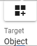
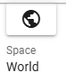
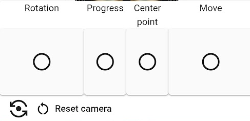

6.20. v-pad (virtual control pad)
6.20.1. V-pad

This function allows you to control the image from the main camera instead of using a mouse or a VR device controller. Swipe (drag with the mouse) up, down, left, right, or right within the square panel and the WebGL screen will move accordingly. The amount of rotation and movement is determined by the length of the movement.
Hint
Starting with version 2.10.0, you can now switch the object of operation.
Main camera
Selected object
For explanation purposes: Can be used in the following cases:
I want to operate with one hand without using a keyboard
I want to use it on a tablet PC as well.
It can also be used with VR devices using controllers and hand tracking, allowing fine adjustments to control the WebGL screen.
Also see V-pad in VR/AR environment .
- : Move:
Moves the target object forward, backward, left and right.
- : Up and Down:
Moves the target up or down.
- : Rotation:
Rotates the object up, down, left and right.
 Reset camera Z axis:
Reset camera Z axis:Equivalent to the keyboard
Qkey. Initialize the Z-axis rotation of the main camera.
- Reset camera:
- Restore the default position of the main camera. (Shortcut: R key)This is the same as the button on the screen tab of the ribbon bar.
- :  Switching the operation target:
Switch between Camera (main camera) and Object (currently selected object). The one with the icon displayed is the current object to be controlled. Each time you press it, it switches.
- :  Switching operation space:
This is only available when the object being operated is an
Object. Switches the space of movement and rotation between World and Local. The space where the icon is displayed is the current space. Each time you press it, it switches.
About the speed of movement and rotation
You can adjust the speed using the V-pad’s Movement Speed and Rotation Speed in the Application tab of the application settings.
Note
The top and bottom panels can only be swiped (dragged) up and down.
You can increase the screen size of the WebGL screen, but that may make it difficult to operate the mouse. In such a case, using this v-pad is convenient because you can finely adjust the display.
Hint
By collapsing the object list and property list panels on the left and right sides of the window, we have created a swipe panel that has the same functionality as the v-pad.
See V-pad (left) for functionality.
6.20.2. other screen
- FOCUS:
Focus the main camera on the selected object.
- Object list panel/properties panel collapsed

- Mobile View
It will be displayed on the edge of the screen. From version 2.10.0, both portrait and landscape are in the same format.
- Left:
Up/down, movement, FOCUS, switching of operation target
- Right:
Rotation, Focus, and switching of operating space